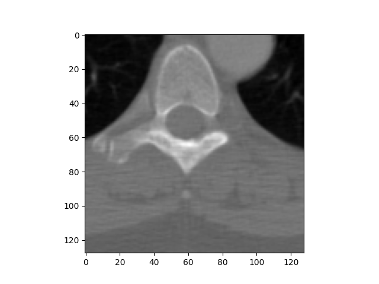

Title example¶
Description of the example.
# authors : some author
# license : BSD3
import matplotlib.pyplot as plt
import pydicom
print(__doc__)
ds = pydicom.read_file("CT_small.dcm")
plt.imshow(ds.pixel_array, cmap=plt.cm.bone)
plt.show()
Total running time of the script: ( 0 minutes 0.394 seconds)